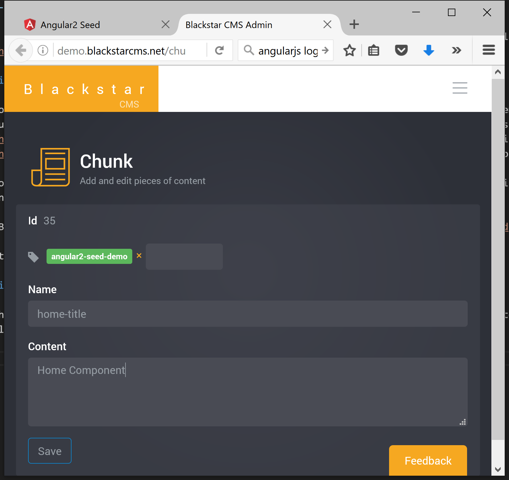

Blackstar CMS now has a public sample showing how to add managed content to an Angular2 (AngularJS) application.

Most, if not all, public facing web applications would benefit from some content management to give administrators a way to keep the content current and to experiment with different marketing material. Building applications inside of a CMS has been tried and found wanting. Recently, I introduced Blackstar CMS as a solution to this problem.
To help developers learn how to use Blackstar CMS to add managed content to their applications I am producing a number of samples, including one for AngularJS.
Blackstar CMS AngularJS Sample
This sample is based on Google’s Angular2 seed sample.
Start the Angular2 sample with npm start and you will see:
The little pencil icons indicate the managed content. If I click the pencil icon next to the ‘Home Component’ heading I am taken to the Blackstar CMS edit page for that content:

Now I can change the content to something more appropriate like ‘Angular2 Seed with Blackstar CMS’:
and now the content has been changed:
The change to the Angular2 Seed sample to make this work was trivial.
Steps used to integrate angular2 and Blackstar CMS
Add the Blackstar CMS JavaScript Client
npm install blackstar-cms-clientAdd a typescript definition file (blackstar-cms-client.d.ts) for Blackstar CMS JavaScript client (included in the npm package). This step is only necessary for projects that use Typescript.
Remove the hard coded content from home.html and add
data-blackstar-nameattributes with appropriate names:<h3 data-blackstar-name="home-title"></h3> <p data-blackstar-name="home-content"></p>Create the content in the Blackstar CMS admin portal
Modify the Home component to reference the type definition file and fetch content from Blackstar CMS and bind it to the UI:
/// <reference path="blackstar-cms-client.d.ts" /> ... export class Home { constructor() { var blackstar = new Blackstar.Client('http://demo.blackstarcms.net/', { showEditControls: true }); blackstar.get({ tags: ['angular2-seed-demo'] }).then(function (chunks) { blackstar.bind(chunks); // bind by matching data-blackstar-name values to chunk names }); } }
There are other, more manually, ways to integrate Blackstar CMS content into an AngularJS application, but the technique shown here is an easy and effective way to get started.